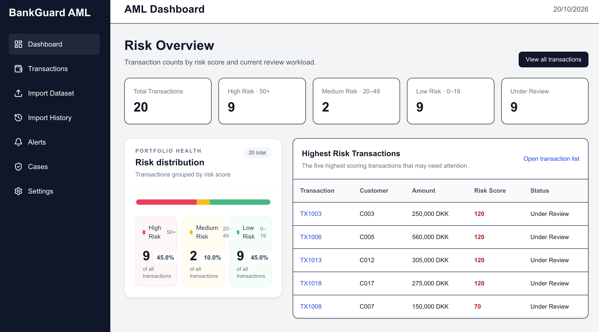

SortSmart
Haderslev.
A gamified waste-sorting experience where users can learn and track their progress. The app welcomes learners with a personal sign-in and level indicator.
Open SortSmart Haderslev ↗GAMIFIED LEARNING APP↗
FULL-STACK DEVELOPER · HADERSLEV, DK
Full-Stack Software Developer and MSc student in Web Communication Design at SDU. I build user-centered web and mobile experiences, with interests in conversational AI, data science, learning design, and gamification.
SELECTED PROJECTS
Digital products and services across home improvement, sustainability, collaboration, and finance.
A gamified waste-sorting experience where users can learn and track their progress. The app welcomes learners with a personal sign-in and level indicator.
Open SortSmart Haderslev ↗A service website connecting customers with handyman, moving, and garden services. Visitors can explore services and request a free quote.
Visit FixHus ↗A chatbot agent that guides citizens in Haderslev on how to sort their waste correctly.
Try the chatbot ↗A shared dashboard concept that helps employees stay connected whether they’re working from the office or remotely.
Discuss this project ↗A transaction monitoring app that scores risk with configurable rules, flags suspicious activity, and helps analysts manage alerts and investigation cases.
NEXT.JS · REACT · FASTAPI · PYTHON · MONGODB ATLAS
Frontend live · API connection in progress
Open BankGuard AML ↗
A SIMPLE WEB REQUEST
A web page asks for information. The backend handles the request, the database supplies or saves the data, and the result comes back to the page.
The browser collects an action and displays the result.
“Show my projects”The API receives the request. The backend checks it and decides what to do.
GET /api/projectsStores information or finds the matching records.
projects → resultsRetrieve: data travels back to the browser. · Add: the backend saves new data, then sends confirmation.
A LITTLE ABOUT ME
I’m a Full-Stack Software Developer pursuing an MSc in Web Communication Design at the University of Southern Denmark (SDU) in Kolding. I enjoy creating user-centered digital solutions and am looking for Full-Stack, Frontend, or Web Developer opportunities in Denmark.
Conversational AI
User experience
Data science
Learning design & gamification
OPEN TO DEVELOPER OPPORTUNITIES
Based in Haderslev, Denmark · Available for Full-Stack, Frontend, and Web Developer roles.
mostafaljamal@outlook.com ↗